公开 Demo Reel
Bilibili BV1yp3x6kEuH
Cel-Shaded Character Rendering System
在 UE5 里搭一套可运行、可解释、可优化的二次元角色渲染系统：材质、运行时、工具三层各自能被单独验证。材质层自建 NPR ＋ C++ 运行时控制层；无引擎源码改动，未新增 Shading Model。
31 个材质函数组成的复用库、数据驱动运行时、光照仲裁、自阴影与调试工具，组成一套可运行、可解释、可继续优化的角色渲染系统。
数据资产只描述"是什么"；组件负责"如何应用、何时恢复"；材质实例只接收最终参数。分层让每个问题都能被归因到具体一层。
PERFORMANCE / 瓶颈定位与优化
角色是骨骼网格且每帧有动画，Lumen 硬件光追每帧都要重建 BVH，开销压在渲染线程。换成软件追踪，把成本转到有余量的 GPU，GI 完整保留。
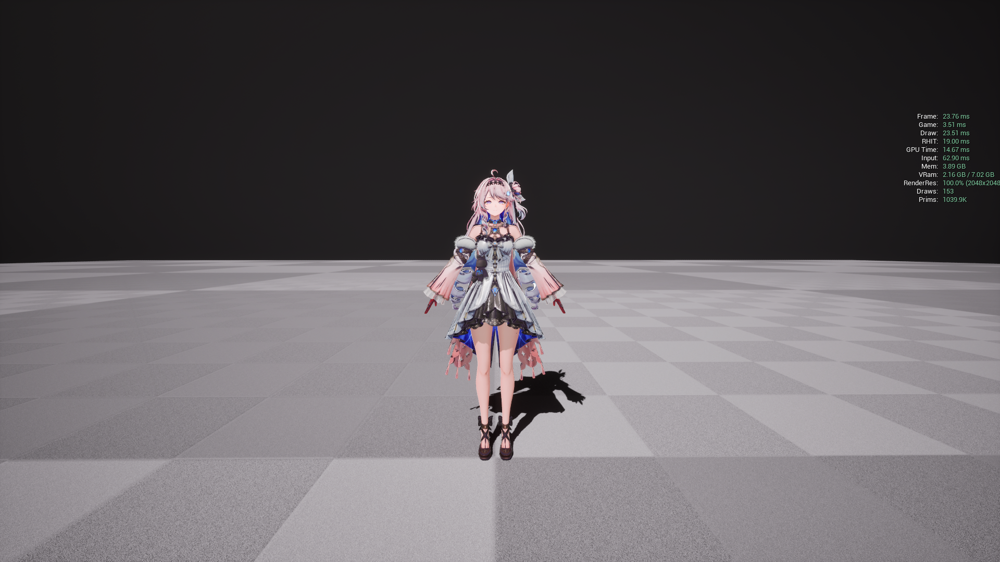


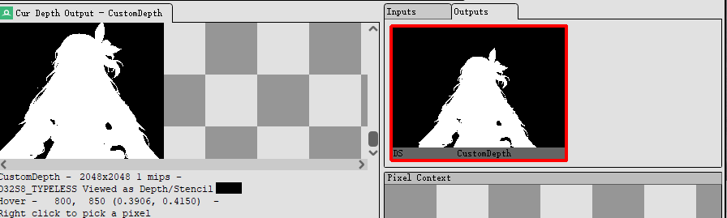
KuroRe 固定姿态，1080p TSR、RTX 5080 Laptop。三对各 60 秒，仅切换身体 CastShadow。GPU P50 从 6.1411 降到 5.7938 ms（−5.655%），三对同向，超过 2.535% 重复波动判定线。
独立基线 60 秒、8,365 帧，GPU P50 / P95 / P99 为 5.970 / 6.484 / 6.710 ms。
MOBILE / 移动端降级
目前只有静态指令对照。共 36 行，覆盖 12 个材质。K90 真机未测，手机端帧时间暂无数据。
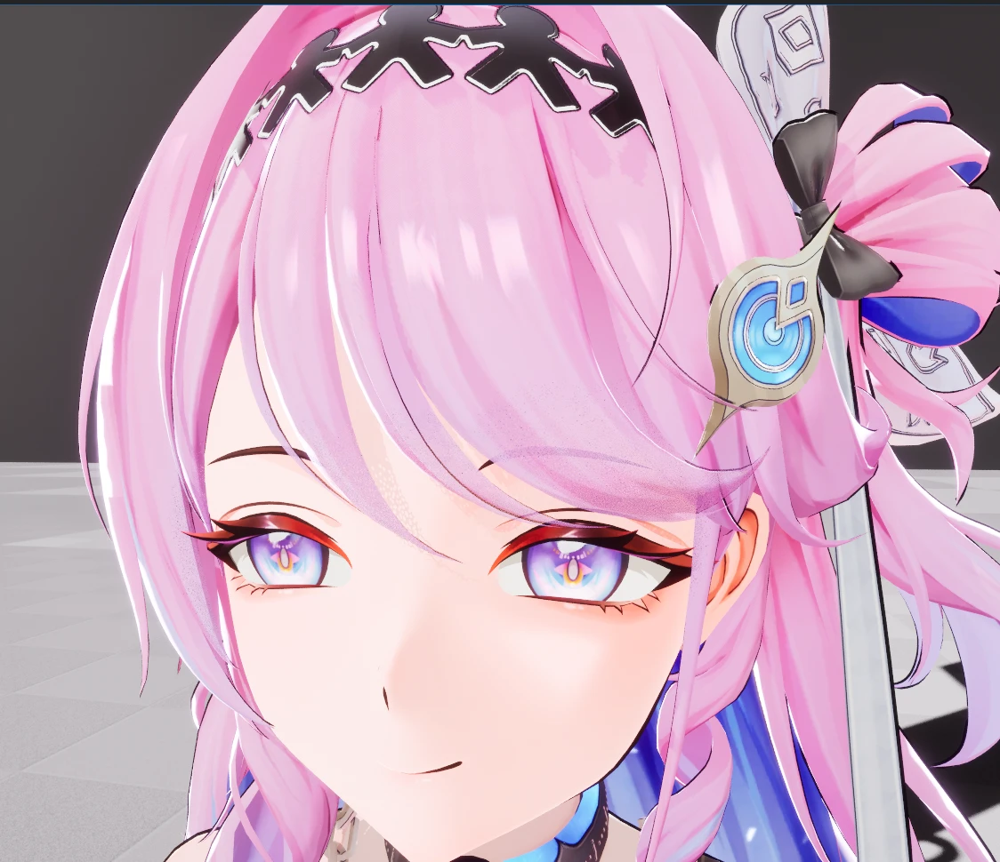
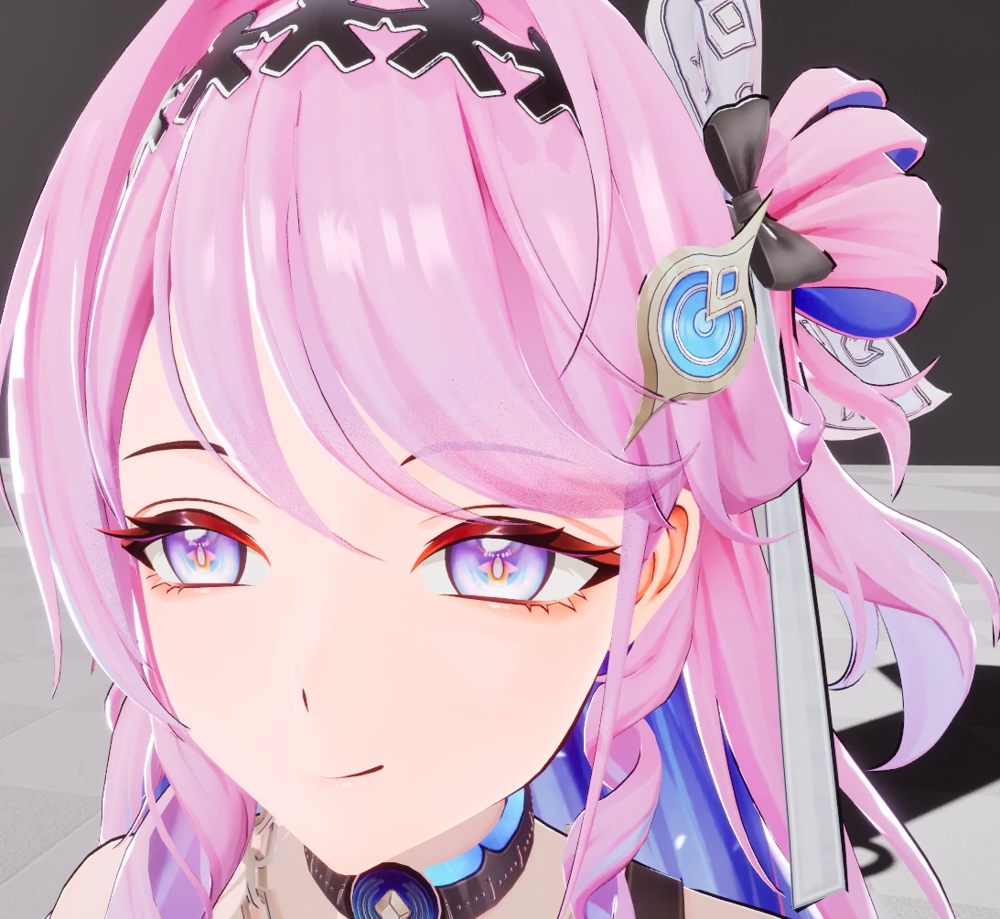
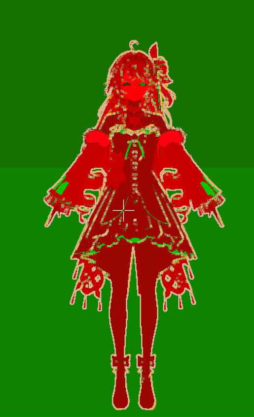
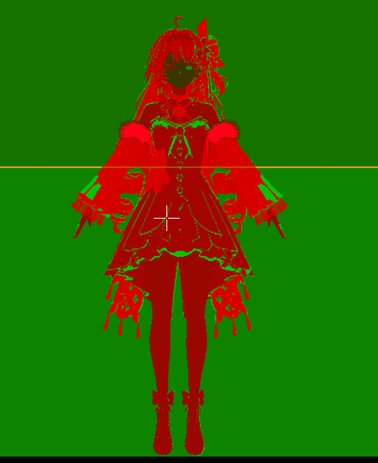
TOOLS / 四组生产工具
记录源 MI、批量选择目标 MI，并按 Scalar、Vector、Texture、Static Switch 分类复制，减少双形态过渡实例的人工作业偏差。
读取 Texture Stats 与 Primitive Stats，派生贴图内存、面数密度等字段，并按规则分级输出可检查报表。方法参考行业公开实践，未把方法论归为原创。
将前后缀、忽略路径与需剥除的自动后缀配置到 Project Settings；全量核对保持只读，避免批量改名破坏引用。
由 C++ 写入运行时 MPC，再由材质函数切换 BaseColor、法线、Face SDF、毛发与阴影等中间结果，帮助把错误归因到具体层。
MATERIAL STUDIES / 31 个材质函数复用
按材质槽划分脸、发、上下身、毛领、眼、描边；真正复用的单元是 31 个材质函数，改一个，所有引用它的材质同时生效。
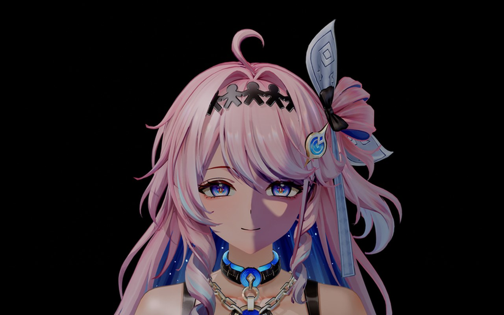


MATERIAL REUSE
两套形态外观差别很大，底下是同一批 master 材质，区别只在材质实例的参数与静态开关。新增形态只需建实例、调参数；改一个模块，全形态全分档同步。

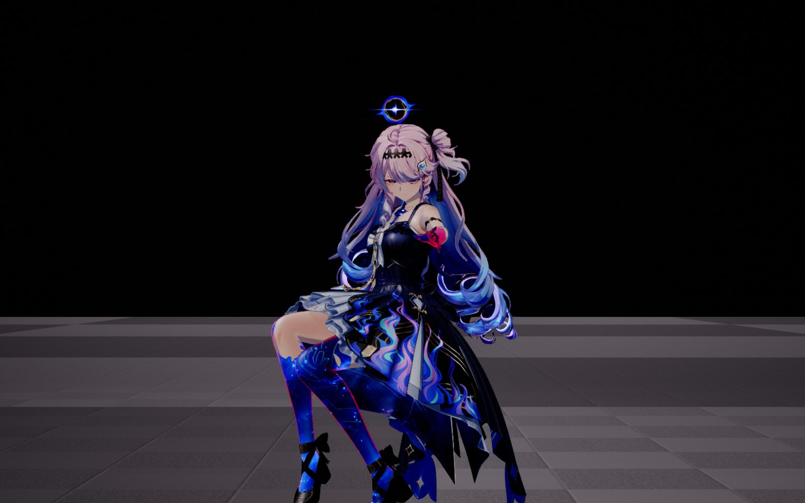
DATA-DRIVEN RUNTIME
状态数据资产描述"是什么"，角色组件负责"怎么应用、何时恢复"：逐帧按曲线算权重写入材质实例，结束后按快照回滚；High / Mid / Low 分档由质量数据资产统一描述。
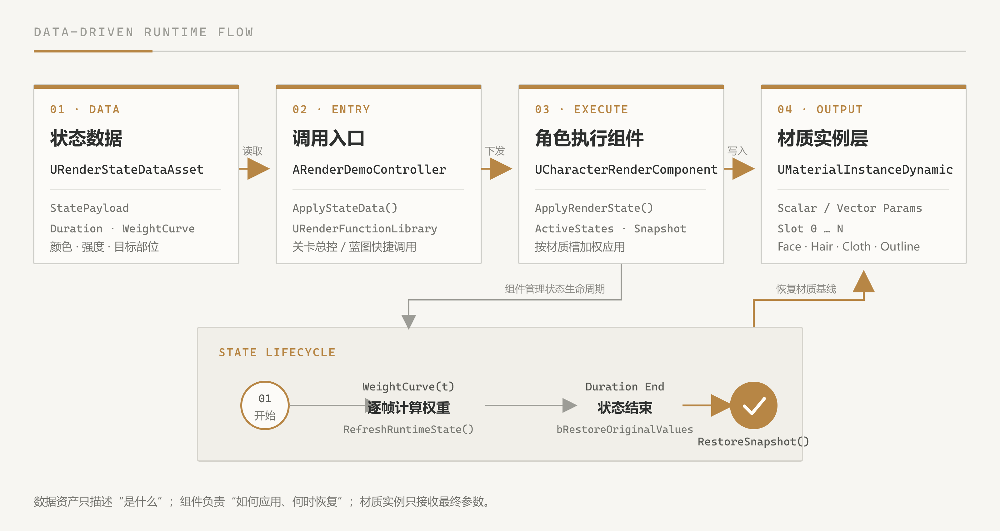
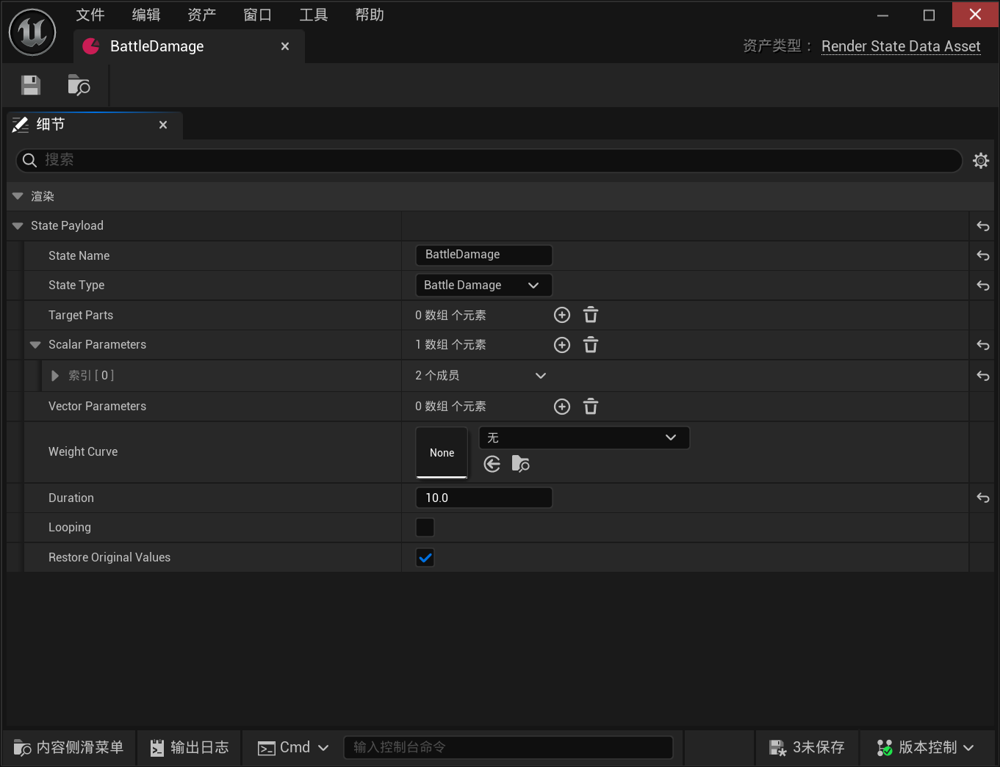
LIGHT ARBITRATION
每帧从主光和局部光里仲裁出唯一的最终光方向、颜色和强度，经 MPC 下发给所有角色材质。走进走出局部光时方向平滑过渡，阴影不会瞬间翻面。已知边界：两盏等距反向的局部灯仍可能让方向抖动，目前靠阻尼压住。

SELF SHADOW
从主光方向对单个角色做一次正交深度采集，在材质里比较深度得到阴影项，和已有阴影取最小值，避免双重变暗。脸走这套自建阴影保证 SDF 不破碎；身体留一成通路吃引擎 VSM。阴影数学全部收进一个 .ush。

RUNTIME FIXES
自查控制层时找到 5 类状态和环境同步问题，修复后在真实 UE 进程里跑数值检查，6 项全部通过。前三次运行因测试脚本问题中途失败，记录保留，不计入通过。这轮只证明行为正确，不证明画面更好或 CPU、GPU 更省；预设切换、无主光路径和运动中的组合状态还没有覆盖。
RENDER PIPELINE EXTENSION / SCENEVIEWEXTENSION + RDG
新插件用 SceneViewExtension 在 DOF 之前插入一个 RDG 全局 shader Pass，参数走 CVar；不改引擎源码，不新增 Shading Model。后处理材质版保留作同机位对照。
FALSIFIED
原计划把线宽拆成独立的膨胀 Pass，实测三档都不可用（糊成黑块、虚线或麻点），已删掉膨胀并融合为单趟。最终收益是 Low 档可以让整个 Pass 不执行，而不是更快。
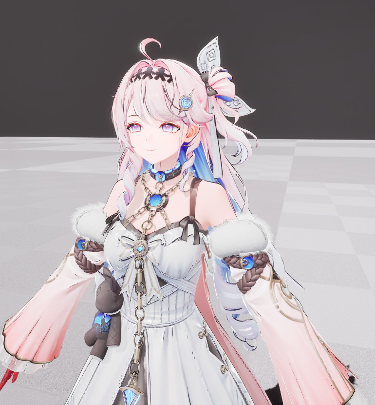
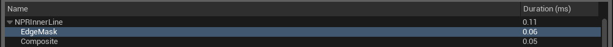
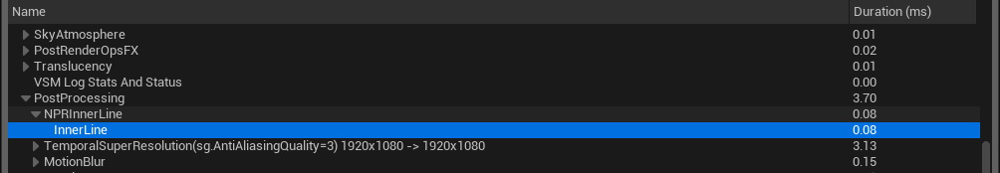


RESTORATION / 逆向还原
对照原作，把角色渲染逐部位还原到 UE 5.8。
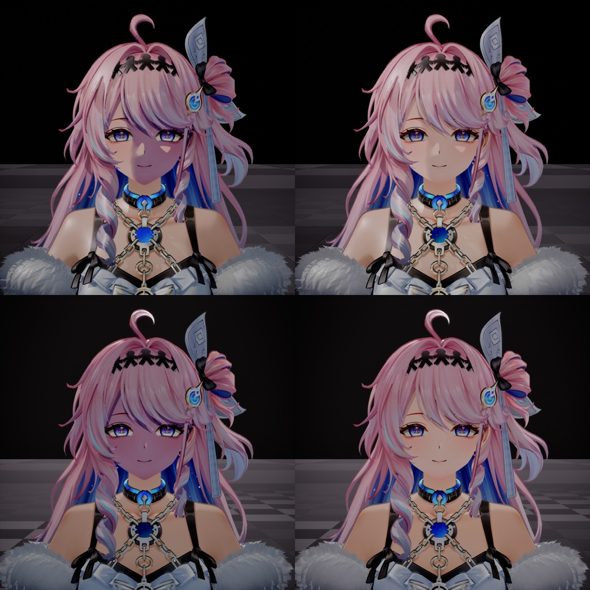
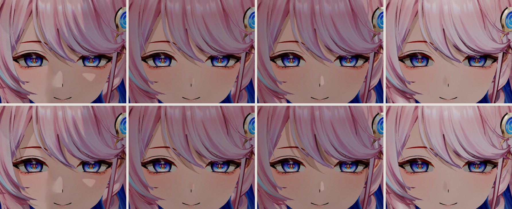
CORRECTIONS / 真实的纠错
我一开始以为毛领要运行时实例化 32 层几何壳，写了 32 个 SkeletalMeshComponent，帧数暴跌。逐槽隔离、后选择优化为像素着色器视差展开壳层，删掉后帧数恢复，画面效果也很好。
FALSIFIED
描边 LOD1：顶点 80515 → 28722（−64.3%），实际提交图元 100030 → 25288。三对 A/B 的 GPU 差值是 −0.487、+0.070、+0.107 ms，方向不一致。画面上发梢变成折线，袖口多出黑块，所以近景保留 LOD0。
身体材质共享采样：像素指令 737 → 735，三对差值 +0.100、−0.046、+0.102 ms，同样没有稳定方向。A-pose 三个固定机位下，画面逐通道平均差不到 0.0003 / 255；运动中的表现没有测。
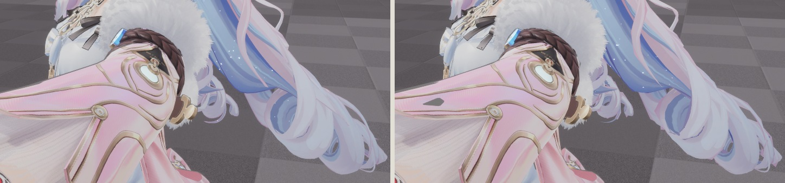
EVIDENCE LEDGER
Bilibili BV1yp3x6kEuH
项目成片与编辑器截图
源代码与运行架构记录
实现文档与调试视图
质量数据资产与运行时字段
独立进程 stat unit 三档对照 · csvprofile · Unreal Insights · RenderDoc 截帧（见 02 性能）
NPRRenderPipeline 插件源码 · ProfileGPU 逐 pass 截图 · 膨胀三档 R1/R0 同机位对照图（见 07 管线扩展）
截帧显示它只需深度却仍跑 BasePass 与速度 Pass，成本未量化
PIE 多个太阳角度的读数与同机位截图（见 08 还原）；第二形态观感与 GPU 成本未测
Editor 目标构建通过，真实 UE 运行检查 6 / 6（见 06 运行时）；画面与 CPU、GPU 未测
几何和指令减少已实测，三对 GPU 差值方向不一致，收益未建立（见 09 纠错）
隔离候选已构建，29 个本体材质槽可覆盖出图；14 个描边与特效槽未整合，中段有斑块，原生切换与性能未验
尚未采样，页面不写数字